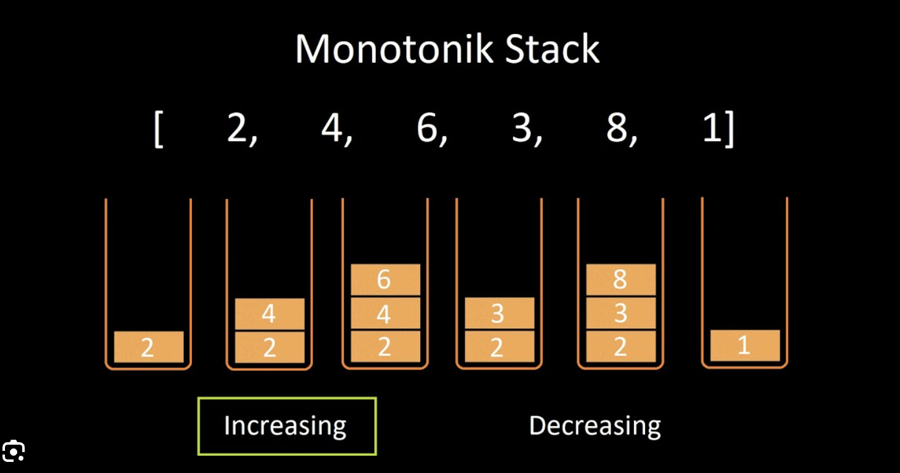

自用算法模版（C++）
数组链表
- 数组：
- 内存连续 ✅；
- 支持元素的随机访问，时间复杂度 O(1) ✅。
- 不适用于需要频繁插入 \ 删除的操作 ❌；
- 大小固定，扩容需搬移元素 ❌。
- 动态数组底层还是静态数组，会使用动态扩容机制自动扩容。
- 链表：
- 适用于需要频繁插入 \ 删除的操作 ✅；
- 大小可以动态扩展 ✅。
- 在内存的缓存空间局部性（Spatial Locality）上相较数组更差 ❌；
- 不支持随机访问，需从头 \ 尾遍历，时间复杂度 O(N) ❌。
- 环形数组：用求模运算，将普通数组变成逻辑上的环形数组，让我们可以用 O(1) 的时间在数组头部增删元素。
#include <iostream>
#include <stdexcept>
#include <ostream>
#include <memory>
class CircularArray {
// 区间 [start, end)。
std::unique_ptr<int[]> arr = nullptr;
size_t start;
size_t end;
size_t count;
public:
CircularArray(size_t size) : count(0), start(0), end(0) {
arr = std::make_unique<int[]>(size);
}
void addFirst(int n) {
// 先左移，再赋值；
start = (start + count - 1) % count;
arr[start] = n;
++count;
}
void addLast(int n) {
// 先赋值，再右移；
arr[end] = n;
end = (end + 1) % count;
++count;
}
int removeFirst() {
// 先保存值，再右移；
auto v = arr[start];
start = (start + 1) % count;
return v;
}
int removeLast() {
// 先左移，再返回值；
end = (end + count - 1) % count;
return arr[end];
}
};
哈希表
- 负载因子（Load Factor）：
α = 存储的键值对数量 / 底层数组大小，表示哈希表装满的程度的度量，值越大，说明存储的键值对越多。α 过大会导致哈希表扩容； - 哈希冲突：两个不同的 key 通过哈希函数得到了相同的索引；
- 拉链法（Chaining）：每个哈希桶（槽）不直接存储一个值，而是存储一个链表或其他数据结构（如链表、链表树、动态数组等），该链表中保存所有映射到同一位置的元素。负载因子可以无限增大；
- 线性探查法（Linear Probing）：在冲突发生时，按照固定的步长，逐步检查下一个桶，直到找到一个空槽来存储元素。负载因子最大为 1。
- 哈希表中键的遍历顺序是无序的，因为遍历过程实际上是遍历哈希表的底层数组，数组中元素的存放顺序可能会由于哈希表扩容而发生改变；
- 哈希表中的 key 必须是不可变类型，因为 key 的变化会使原有的索引失效，导致无法找到之前存储的数据；
- LinkedHashMap：使用双向链表记录哈希表中键值对的插入顺序。双向链表可以保证哈希表值删除的 O(1) 复杂度。

- ArrayHashMap：使用数组维护加入到哈希表中的所有键值对，哈希表中存放 (key, index)，数组中按照 index 存放键值对的实际 Node。可用于从哈希表中以 O(1) 复杂度随机获得 key。下述实例代码没有进行越界检查。
#include <vector>
#include <unordered_map>
#include <random>
struct Node {
int key;
int val;
};
class ArrayHashMap {
std::unordered_map<int, int> map;
std::vector<Node> arr;
std::mt19937 gen; // Mersenne Twister 19937 伪随机数生成器（PRNG），提供高质量的伪随机数；
public:
ArrayHashMap() : gen(std::random_device{}()) {} // 随机种子，决定随机数的起始状态；
void put(int key, int val) {
arr.push_back({ key, val });
map[key] = arr.size() - 1;
}
int get(int key) {
auto index = map[key];
return arr[index].val;
}
void remove(int key) {
// 调换待删除元素和数组尾部元素；
auto index = map[key];
auto& node = arr.back();
std::swap(arr[index], node);
// 调整尾部元素存储在哈希表中的索引位置；
map[node.key] = index;
// 删除数组尾部元素；
arr.pop_back();
// 删除哈希表中的元素；
map.erase(key);
}
int randomKey() {
std::uniform_int_distribution<int> dist(0, arr.size() - 1);
return arr[dist(gen)].key;
}
};
二叉树
类别
- 满二叉树（Perfect Binary Tree）：每一层节点都是满的；
- 完全二叉树（Complete Binary Tree）：每一层的节点都紧凑靠左排列，且除了最后一层，其他每层都必须是满的；
- 完全二叉树的左右子树中，至少有一棵是满二叉树。
- 二叉搜索树（Binary Search Tree）：树中的每个节点，其左子树的每个节点的值都要小于这个节点的值，右子树的每个节点的值都要大于这个节点的值。你可以简单记为「左小右大」。二叉搜索树的性能取决于树的高度，树的高度取决于树的平衡性。
- 主要的实际应用是 TreeMap 和 TreeSet，TreeMap 类似于哈希表，它把键值对存储在一棵二叉搜索树的节点里。TreeMap 中的键值对按照 key 自动排序，插入、删除、查找的时间复杂度为 O(logN)。
- 平衡二叉树（Balanced Binary Tree）：它的「每个节点」的左右子树的高度差不超过 1。假设平衡二叉树中共有 N 个节点，那么平衡二叉树的高度是 O(logN)。
树的各种遍历
- 在实际的算法问题中，DFS 算法常用来穷举所有路径，BFS 算法常用来寻找最短路径。
递归遍历（DFS）
- 前序位置：在刚刚进入一个二叉树节点的时候执行；
- 中序位置：在一个二叉树节点左子树都遍历完，即将开始遍历右子树的时候执行。BST 的中序遍历结果是有序的；
- 后序位置：在将要离开一个二叉树节点的时候执行。
struct TreeNode {
TreeNode* left;
TreeNode* right;
int val;
TreeNode(int val) : left(nullptr), right(nullptr), val(val) {}
};
void traverse(TreeNode* root) {
if (!root) return;
// 前序位置；
traverse(root->left);
// 中序位置；
traverse(root->right);
// 后序位置；
}
层序遍历（BFS）
- 可以记录遍历层级的写法框架：
void bfsBinaryTreeTraverse(TreeNode* root) {
if (!root) return;
std::queue<TreeNode*> q;
q.push(root);
size_t depth = 1;
while (!q.empty()) {
int sz = q.size();
while (sz-- > 0) { // 处理当前层的所有节点；
auto& node = q.front();
q.pop();
if (node->left) {
q.push(node->left);
}
if (node->right) {
q.push(node->right);
}
}
++depth;
}
}
- 带有节点路径权重和的写法框架：
struct State {
TreeNode* node;
size_t depth;
};
void bfsBinaryTreeTraverseWithPriority(TreeNode* root) {
if (!root) return;
std::queue<State> q;
q.push({ root, 1 });
while (!q.empty()) {
auto& cur = q.front();
q.pop();
if (cur.node->left) {
q.push({ cur.node->left, cur.depth + 1 });
}
if (cur.node->right) {
q.push({ cur.node->right, cur.depth + 1 });
}
}
}
多叉树
- 森林是多个多叉树的集合。一棵多叉树也是一个特殊的森林。
递归遍历（DFS）
struct TreeNode {
int val;
std::vector<TreeNode*> children;
};
void traverse(TreeNode* root) {
if (!root) return;
// 前序位置；
for (auto child : root->children) {
traverse(child);
}
// 后序位置；
}
层序遍历（BFS）
void bfsTraverse(TreeNode* root) {
if (!root) return;
std:queue<TreeNode*> q;
q.push(root);
while (!q.empty()) {
auto node = q.front();
q.pop();
for (auto child : node->children) {
q.push(child);
}
}
}
void bfsBinaryTreeTraverseWithPriority(TreeNode* root) {
if (!root) return;
std::queue<TreeNode*> q;
q.push(root);
size_t depth = 1;
while (!q.empty()) {
size_t sz = q.size();
while (sz-- > 0) {
auto cur = q.front();
q.pop();
for (auto child : cur->children) {
q.push(child);
}
}
++depth;
}
}
struct State {
TreeNode* node;
size_t depth;
};
void bfsBinaryTreeTraverseWithPriorityAsState(TreeNode* root) {
if (!root) return;
std::queue<State> q;
q.push({ root, 1 });
while (!q.empty()) {
auto cur = q.front();
q.pop();
for (auto child : cur.node->children) {
q.push({ child, cur.depth + 1 });
}
}
}
二叉堆
- 二叉堆是一种拥有特殊性质的完全二叉树，这棵二叉树上的任意节点的值，都必须大于等于（或小于等于）其左右子树所有节点的值。如果是大于等于，我们称之为「大顶堆」，如果是小于等于，我们称之为「小顶堆」；
- 一个二叉堆的左右子堆（子树）也是一个二叉堆。这个性质主要在堆排序算法的优化中有用到；
- 主要操作就两个：sink（下沉）、swim（上浮），用以维护二叉堆的性质。
- 主要应用有两个：
- 优先级队列（Priority Queue），增删元素的复杂度是 O(logN)；
- 堆排序（Heap Sort）。
优先级队列
- [🔴 合并 K 个升序链表]：优先队列（最小堆） + 虚拟头结点遍历；
- [🟠 有序矩阵中第 K 小的元素]：后续加入优先队列的元素需要通过矩阵的 x、y 坐标获取，这些信息需要被同时保存在队列元素中；
// 简化小顶堆实现；
#include<vector>
#include<iostream>
#include<algorithm>
class PriorityQueue {
std::vector<int> heap;
size_t size = 0;
static int parent(size_t node) {
return (node - 1) / 2;
}
static int left(size_t node) {
return node * 2 + 1;
}
static int right(size_t node) {
return node * 2 + 2;
}
void swim(size_t node) {
while (node > 0 && heap[node] < heap[parent(node)]) {
std::swap(heap[node], heap[parent(node)]);
node = parent(node);
}
}
void sink(size_t node) {
while (left(node) < size) { // 完全二叉树，只要有左子节点就继续；
// 比较自己和左右子节点，看看谁最小；
auto min = node;
if (left(node) < size && heap[left(node)] < heap[min]) {
min = left(node);
}
if (right(node) < size && heap[right(node)] < heap[min]) {
min = right(node);
}
if (min == node) break;
std::swap(heap[node], heap[min]); // 如果左右子节点中有比自己小的，就交换；
node = min;
}
}
public:
PriorityQueue(int capacity) {
heap.resize(capacity);
}
auto peak() {
return heap[0];
}
// 向堆中插入一个元素，时间复杂度 O(logN)；
auto push(int x) {
heap[size] = x; // 把新元素追加到最后（最后一层的最右，保持完全二叉树）；
++size;
swim(size - 1); // 向堆顶上浮元素；
}
// 删除栈顶元素，时间复杂度 O(logN)；
auto pop() {
int n = heap[0];
heap[0] = heap[size - 1]; // 把堆底元素放到堆顶；
--size;
sink(0); // 下沉位于堆顶的元素，使其位于正确位置；
return n;
}
};
队列 / 栈
- [🟠 重排链表]：用栈存储节点，然后逆序取出重新排列；
- 底层均是数组或链表实现，可以用两个栈实现队列：
class Queue {
stack<int> s1, s2; // 两个背对方向的栈；
public:
void push(int x) {
s2.push(x); // 新元素永远 push 入右侧的栈；
}
int pop() {
peek(); // 左侧栈是否还有元素，没有则从右侧栈搬移过来；
auto r = s1.top();
s1.pop();
return r;
}
int peek() {
if (s1.empty()) {
while (!s2.empty()) { // 将右侧栈中的元素依次搬入左侧栈；
const auto v = s2.top();
s1.push(v);
s2.pop();
}
}
return s1.top();
}
auto empty() {
return s1.empty() && s2.empty();
}
};
单调栈（Monotonic Stack）

- 新元素入栈后，栈内的元素都保持有序（单调递增或单调递减）。
- 常用于解决的问题：
- 每个元素左 / 右边第一个大 / 小的元素；
- 每日温度；
vector<int> dailyTemperatures(vector<int>& temperatures) {
int n = temperatures.size();
vector<int> res(n);
stack<int> stk; // 存放下标，保证栈内 temperatures[stk.top()] 单调递减；
for (int i = n - 1; i >= 0; --i) { // 从后往前遍历，得到每一个左侧元素右侧最近的大于元素；
/**
* 想找大元素，就在入栈前把栈里比它小的元素踢掉。
* 想找小元素，就在入栈前把栈里比它大的元素踢掉。
*/
// 弹出所有比当前温度小或相等的索引；
while (!stk.empty() && temperatures[i] >= temperatures[stk.top()]) {
stk.pop();
}
// 如果栈不为空，说明找到了下一个更高温度的下标；
res[i] = stk.empty() ? 0 : stk.top() - i;
stk.push(i); // 当前索引入栈；
}
return res;
}
单调队列（Monotonic Queue）
- 新元素入队列后，队列内的元素都保持有序（单调递增或单调递减）。
- 主要用于辅助滑动窗口相关问题。
class MonotonicQueue {
list<int> maxq; // 双向链表，可以快速在头尾进行操作；
public:
void push(int n) {
while (!maxq.empty() && maxq.back() < n) {
maxq.pop_back(); // 在队尾移除小元素；
}
maxq.push_back(n);
}
auto max() {
return maxq.front(); // 队头为最大元素；
}
void pop(int n) {
if (n == maxq.front()) { // 判断队头元素是否还存在（可能在上一步 push 时被移除）；
maxq.pop_front(); // 移除队头的元素；
}
}
};
排序算法
快速排序
线段树
- 用于高效解决数组的区间查询和区间动态修改问题；
- 可以在 O(logN) 的时间复杂度查询任意长度的区间元素聚合值，在 O(logN) 的时间复杂度对任意长度的区间元素进行动态修改，其中 N 为数组中的元素个数。
链式结构
// 线段树节点；
struct SegmentNode {
size_t l, r; // 该节点表示的区间范围 [l, r]；
int mergeVal;
SegmentNode* left = nullptr;
SegmentNode* right = nullptr;
SegmentNode(int mergeVal, size_t l, size_t r) : mergeVal(mergeVal), l(l), r(r) {}
};
class SegmentTree {
SegmentNode* root;
std::function<int(int, int)> merger;
SegmentNode* build(const std::vector<int>& nums, int l, int r) {
if (l == r) {
return new SegmentNode(nums[l], l, r);
}
int mid = l + (r - l) / 2;
auto left = build(nums, l, mid);
auto right = build(nums, mid + 1, r);
auto node = new SegmentNode(merger(left->mergeVal, right->mergeVal), l, r);
node->left = left;
node->right = right;
return node;
}
void update(SegmentNode* node, int index, int value) {
// 找到目标节点；
if (node->l == node->r) {
node->mergeVal = value;
return;
}
int mid = node->l + (node->r - node->l) / 2;
if (index <= mid) {
// 若 index 较小，则去左子树更新；
update(node->left, index, value);
} else {
// 若 index 较大，则去右子树更新；
update(node->right, index, value);
}
// 在后续位置更新父节点的值；
node->mergeVal = merger(node->left->mergeVal, node->right->mergeVal);
}
int query(SegmentNode* node, int qL, int qR) {
if (node->l == qL && node->r == qR) {
return node->mergeVal;
}
// 未直接命中区间，需要向下查找；
int mid = node->l + (node->r - node->l) / 2;
if (qR <= mid) {
return query(node->left, qL, qR);
} else if (qL > mid) {
return query(node->right, qL, qR);
} else {
// node.l <= qL <= mid < qR <= node.r；
// 目标区间横跨左右子树；
return merger(
query(node->left, qL, mid),
query(node->right, mid + 1, qR)
);
}
}
public:
SegmentTree(const std::vector<int>& nums, std::function<int(int, int)> merger) : merger(merger) {
root = build(nums, 0, nums.size() - 1);
}
void update(int index, int value) {
update(root, index, value);
}
int query(int qL, int qR) {
return query(root, qL, qR);
}
};
数组实现
技巧
分治算法 & 分治思想
- 分治思想：把一个问题分解成若干个子问题，然后分别解决这些子问题，最后合并子问题的解得到原问题的解，这种思想广泛存在于递归算法中。
链表双指针
- 当需要创造一条新链表的时候，可以使用虚拟头结点简化边界情况的处理。
// dummy.next 永远指向新链表，dummyCursor 用来游动；
ListNode dummy(-1), *dummyCursor = &dummy;
- 如果需要把原链表的节点接到新链表上，而不是 new 新节点来组成新链表的话，那么断开节点和原链表之间的链接可能是必要的；
- 如何只遍历一次链表，就得到倒数第 k 个节点？第一个指针先走 k 步，第二个指针接着从链表头部与第一个指针同步向尾部移动。当第二个指针到达最后一个节点后时，第一个指针指向的就是链表倒数第 k 个节点；
- 快慢指针（Floyd 算法）：两个指针均从链表头开始移动，每当慢指针 slow 前进一步，快指针 fast 就前进 n 步，这样，当 fast 走到链表末尾时，slow 就指向了链表低 1/n 处的节点。该技巧可用于判断链表是否有环。
ListNode* middleNode(ListNode* head) {
ListNode* slow = head;
ListNode* fast = head;
while (fast && fast->next) {
slow = slow->next;
fast = fast->next->next;
}
return slow;
}
数组
- 双指针、快慢指针；
- 查找回文串：从中心向两端扩散的双指针；
- 滑动窗口：快慢指针的一种变体，一快一慢两个指针前后相随，中间的部分就是窗口。该技巧主要用来解决子数组问题，比如：寻找符合某个条件的最长/最短子数组。
- [🔴 最小覆盖子串]。
// 一个经典的滑动窗口结构：
string minWindow(string s, string t) {
std::unordered_map<char, size_t> win, need;
for (const char ch : t) {
need[ch]++;
}
size_t left = 0, right = 0;
size_t valid = 0;
size_t start = 0, len = INT_MAX;
// 窗口由 left、right 组成，左闭右开；
while (right < s.size()) {
// 移动窗口右边；
const auto ch = s.at(right);
if (need.count(ch)) {
win[ch]++;
if (win[ch] == need[ch]) {
++valid;
}
}
++right;
while (valid == need.size()) {
if (right - left < len) {
start = left;
len = right - left;
}
const auto ch = s.at(left);
if (need.count(ch)) {
if (win[ch] == need[ch])
--valid;
--win[ch];
}
++left;
}
}
return len == INT_MAX ? "" : s.substr(start, len);
}
- 二分搜索：
- [🟠 最小覆盖子串]；
- [🟠 在 D 天内送达包裹的能力]；
- [🔴 分割数组的最大值]；
- 解题思路：
- 题目问什么，什么就是自变量 x，然后写出 f(x) 的逻辑。target 对应函数返回值；
- 找到 x 的左右范围，设定 left 与 right 的边界；
- 确定查找 left-bound 还是 right-bound 解题。
// 普通版；
int binarySearch(vector<int>& nums, int target) {
int left = 0, right = nums.size() - 1;
while (left <= right) { // 此时 [left, right] 均为闭区间；
const auto mid = left + (right - left) / 2;
if (nums[mid] == target) return mid;
else if (nums[mid] < target) {
// target 在右侧，更新 left；
left = mid + 1; // [left, right] 都是待搜索的闭区间；
} else {
right = mid - 1;
}
}
return -1;
}
// 查找目标左右边界版；
int leftBound(vector<int>& nums, int target) {
int left = 0, right = nums.size() - 1;
while (left <= right) { // 此时 [left, right] 均为闭区间；
const auto mid = left + (right - left) / 2;
if (nums[mid] == target) {
right = mid - 1;
} else if (nums[mid] < target) {
left = mid + 1;
} else {
right = mid - 1;
}
}
if (left >= nums.size()) {
return -1;
}
// 若找不到，可能返回大于 target 的最小元素位置；
return nums[left] == target ? left : -1;
}
int rightBound(vector<int>& nums, int target) {
int left = 0, right = nums.size() - 1;
while (left <= right) { // 此时 [left, right] 均为闭区间；
const auto mid = left + (right - left) / 2;
if (nums[mid] == target) {
left = mid + 1;
} else if (nums[mid] < target) {
left = mid + 1;
} else {
right = mid - 1;
}
}
if (right < 0) {
return -1;
}
// 若找不到，可能返回小于 target 的最大元素位置；
return nums[right] == target ? right : -1;
}
- 前缀和数组：数组每一个元素都是前面所有元素的和，适用于快速、频繁地计算一个索引区间内的元素之和。这个技巧也可以用于二维矩阵。
class NumArray {
public:
vector<int> prefixArray;
NumArray(vector<int>& nums) {
prefixArray.resize(nums.size() + 1);
prefixArray[0] = 0; // 便于计算累加和；
for (size_t i = 1; i <= nums.size(); ++i) { // 注意 i 的结束条件，保证 nums 的遍历范围是完整的；
prefixArray[i] = nums[i - 1] + prefixArray[i - 1];
}
}
int sumRange(int left, int right) {
return prefixArray[right + 1] - prefixArray[left]; // 得到索引范围 [left, right] 的数组元素和；
}
};
- 差分数组：数组保存的是每个元素与前一个元素的差值，适用于频繁对原始数组的某个区间的元素进行增减。
class Difference {
std::vector<int> diff;
public:
Difference(std::vector<int>& nums) {
diff = std::vector<int>(nums.size());
diff[0] = nums[0]; // 第一个元素保持不变；
for (auto i = 1; i < nums.size(); ++i) {
diff[i] = nums[i] - nums[i - 1]; // 构建差分数组；
}
}
void increment(int i, int j, int val) { // 给数组区间 [i, j] 增加 val；
diff[i] += val;
if (j + 1 < diff.size())
diff[j + 1] -= val; // 注意是给区间后面第一个元素减去 val；
}
auto result() {
std::vector<int> res(diff.size());
res[0] = diff[0];
for (auto i = 1; i < diff.size(); ++i) {
res[i] = res[i - 1] + diff[i];
}
return res;
}
};
二叉树
- 直径：就是树中某个节点的左右子树的最大深度之和。
递归的两种思维模式
- [🟢 二叉树的最大深度]：分别用「分解问题」与「遍历」两种递归思维模式解决；
// 分解问题的思维模式；
int maxDepth(TreeNode* root) {
if (!root) return 0;
// 分解问题：想计算整颗树的最大深度，先计算左右子树的最大深度，然后再加自己（+1）；
int leftMax = maxDepth(root->left);
int rightMax = maxDepth(root->right);
return 1 + max(leftMax, rightMax);
}
// 遍历的思维模式：遍历整棵树，通过全局状态记录高度；
class Solution {
int depth = 0;
int result = 0;
public:
auto maxDepth(TreeNode* root) {
traverse(root);
return result;
}
void traverse(TreeNode* root) {
if (!root) return;
++depth; // 进入当前节点，高度 +1；
if (depth > result) result = depth;
if (root->left) traverse(root->left);
if (root->right) traverse(root->right);
--depth; // 即将退出当前节点，高度 -1；
}
};
二叉树构造
- [🟠 从前序与中序遍历序列构造二叉树]；
- [🟠 从中序与后序遍历序列构造二叉树]；
- 用先序 \ 后序遍历结果确定二叉树中每个根节点的值，中序遍历结果确定节点的左子树和右子树；
动态规划（Dynamic Programming）
- [🟠 领钱兑换]；
- [🟢 斐波那契数]：
- 重叠子问题：比如 f(5) 的计算中，f(3)、f(2) 要重复计算多次；
- 优化方式：
- 使用「备忘录」存储中间结果 - 适用于自顶向下的计算方式，在递归过程中存储已经计算过的结果，以避免重复计算；
- 使用「DP Table」优化穷举过程 - 适用于自底向上的计算方式，显式存储所有子问题的解。
// 自顶向下 + 备忘录；
class Solution {
vector<int> memo;
public:
int dp(int n) {
if (n <= 1) return n;
if (memo[n] != 0) return memo[n]; // 从备忘录中提取之前的计算结果；
const int result = dp(n - 1) + dp(n - 2);
memo[n] = result; // 更新备忘录；
return result;
}
int fib(int n) {
memo = vector<int>(n + 1, 0);
return dp(n);
}
};
// 自底向上 + DP Table；
class Solution {
public:
int fib(int n) {
if (n <= 1) return n;
vector<int> dp(n + 1, 0);
dp[0] = 0, dp[1] = 1;
for (auto i = 2; i <= n; ++i) {
dp[i] = dp[i - 1] + dp[i - 2];
}
return dp[n];
}
};
答题技巧
- 确定「状态」，也就是原问题和子问题中会变化的变量；
- 确定「选择」，也就是导致「状态」产生变化的行为；
- 明确「dp 函数/数组」的定义。
回溯算法
- [🟠 全排列]；
class Solution {
vector<vector<int>> result;
public:
void iterate(vector<int>& nums, vector<int>& tracks, unordered_map<int, bool>& colorMap) {
// 回溯 -> 在循环里递归；
// tracks 收集每一个路径，当 nums 数字全被标记时推入 result；
if (tracks.size() == nums.size()) {
result.push_back(tracks);
}
// 只遍历当前递归中，nums 没有被标记的部分，元素不重复选择；
for (auto num : nums) {
if (colorMap[num]) continue;
// 修改状态；
colorMap[num] = true;
tracks.push_back(num);
iterate(nums, tracks, colorMap);
// 恢复状态；
colorMap[num] = false;
tracks.pop_back();
}
}
vector<vector<int>> permute(vector<int>& nums) {
vector<int> tracks;
unordered_map<int, bool> colorMap;
for (auto num: nums) colorMap[num] = false;
iterate(nums, tracks, colorMap);
return result;
}
};
其他技巧
- 丑数（Ugly Number）：如果一个数 n 可以表示为：n = 2^a x 3^b x 5^c，其中 a、b、c 都是非负整数，那么这个数就是一个丑数。
- 质数（素数，Prime）：一个数只能被 1 和它本身整除。Sieve of Eratosthenes 筛选法：
#include <vector>
#include <algorithm>
int countPrimes(int n) {
if (n < 2) return 0;
std::vector<bool> isPrime(n, true);
isPrime[0] = isPrime[1] = false; // 0 和 1 不是质数；
for (int i = 2; i * i < n; ++i) {
if (isPrime[i]) {
for (int j = i * i; j < n; j += i) {
isPrime[j] = false;
}
}
}
return std::count(isPrime.begin(), isPrime.end(), true);
}
- 牛顿迭代法求近似平方根：
struct Solution {
auto mySqrt(int x) {
if (x == 0) return 0;
double y = x;
while (abs(y * y - x) > 1e-6) { // 控制逼近精度；
y = (y + x / y) / 2;
}
return y;
}
};
评论 | Comments